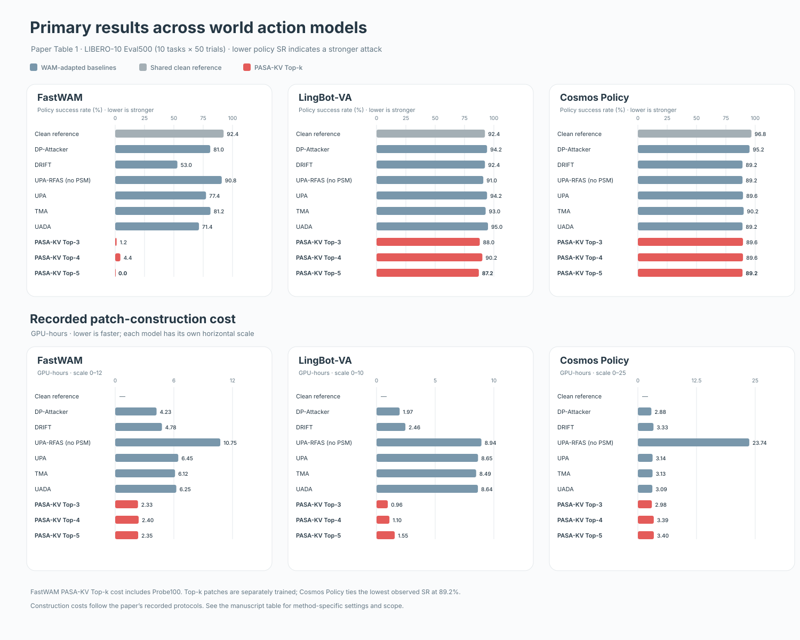
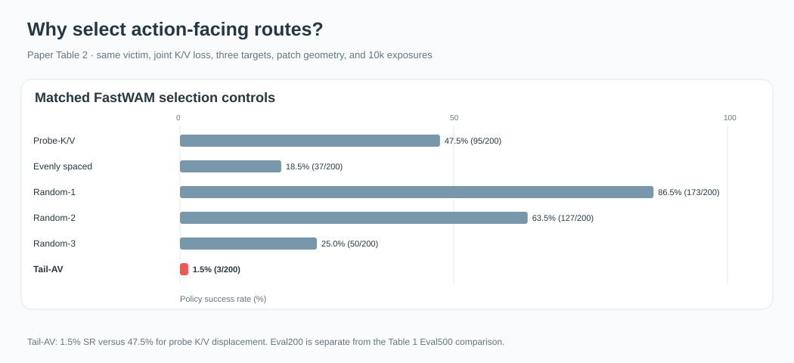
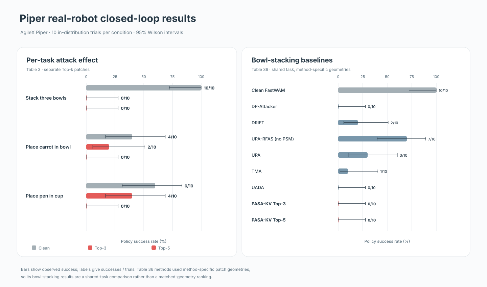

PASA-KV · Evaluation
Results and diagnostics
Policy success is the robot's task success rate. FastWAM training used 40 tasks across LIBERO Spatial, Object, Goal, and LIBERO-10. The primary closed loop evaluation uses LIBERO-10: 10 tasks with 50 trials each
Primary comparison
Policy success and recorded GPU hours needed to construct each patch, as reported in the paper. Each model uses its own cost scale

Route selection
Matched FastWAM controls use the same attack loss, patch geometry, target count, and training budget. This comparison uses 20 trials per LIBERO-10 task

Piper robot outcomes
Each reported condition has 10 physical trials. Baseline comparisons cover bowl stacking only and use different patch geometries
